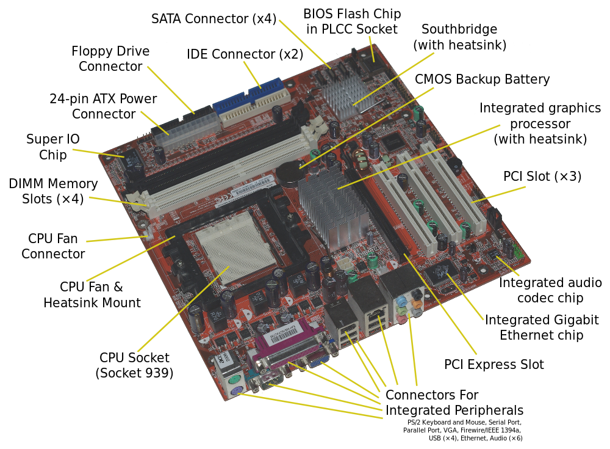
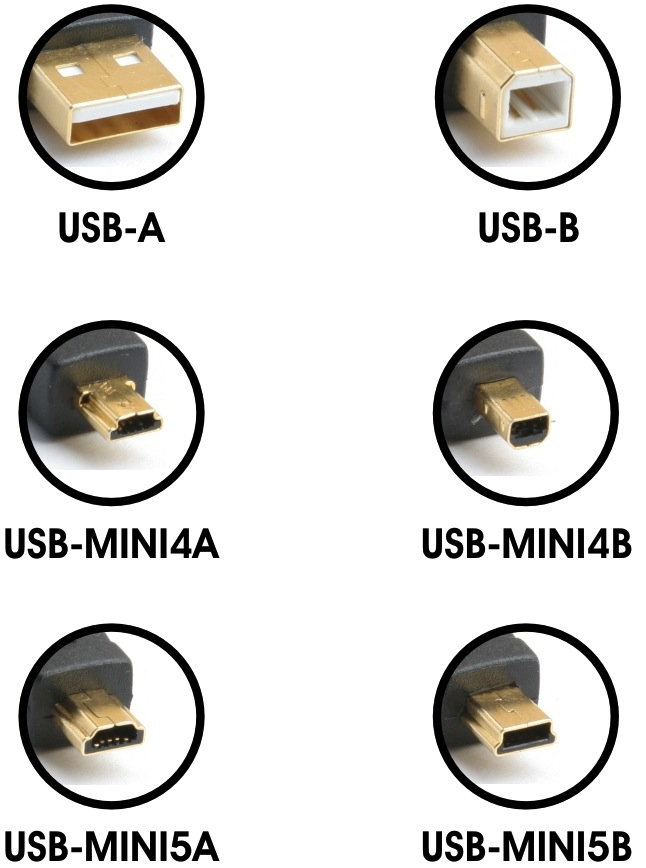
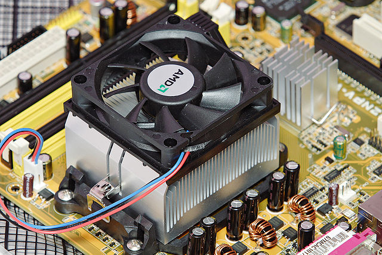
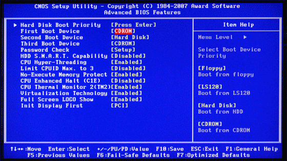
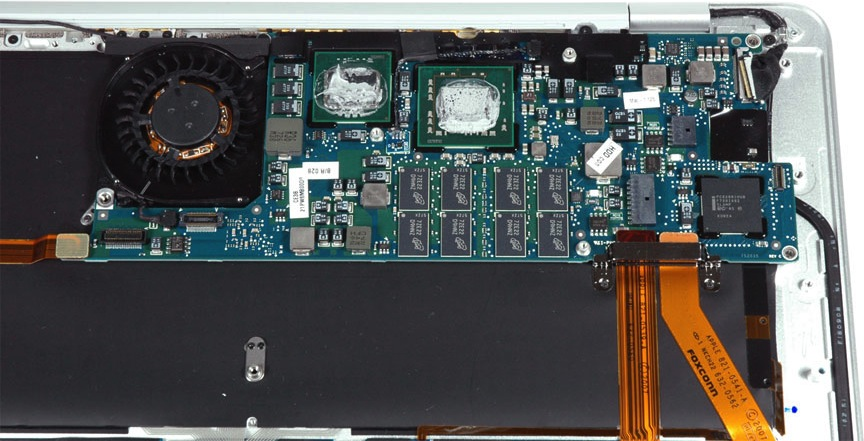
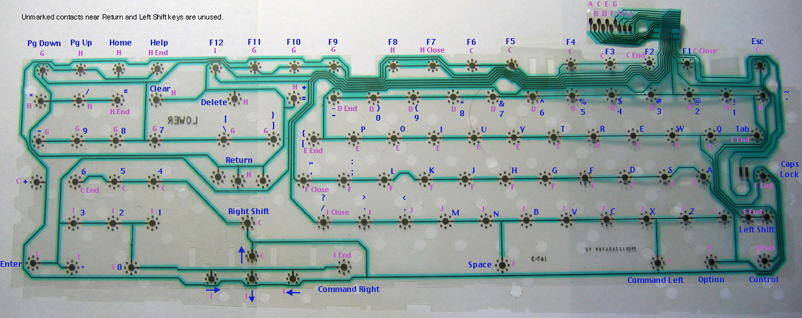
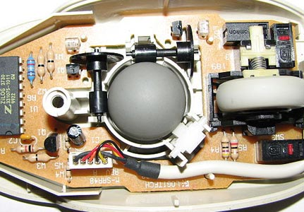
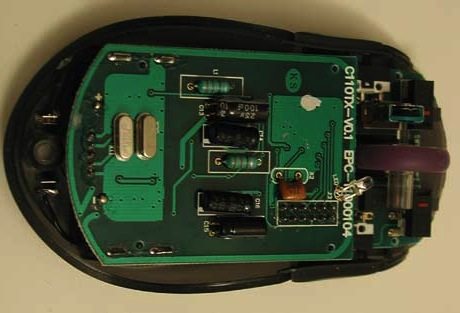
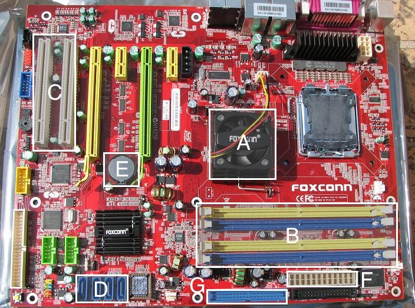

Chapter 1 Power Up
Welcome to Understanding Computers and the Internet! So glad you could make it. Let's begin with a story. There's a good chance you're sitting at or near a computer right now, whether that be a laptop, tablet, or smartphone. At some point during the day, you hit the power button on one of those devices and watched as the screen lit up and your computer came to life. Pressing that button kicked off something known as the boot process, which wakes up all the hardware components that make up your computer and starts up all of the software programs necessary to bring up your desktop.
First, all of your computer's hardware, the physical components that make up your machine, has to kick into gear. Many of your computer's hardware components are connected to the motherboard, also known as a logic board, which is an expandable circuit board that manages communication among your system's various parts. Here's a photo of a motherboard from a 2007 Acer desktop computer.

It's 9am (why are you awake this early?), and you just pressed the power button on your desktop computer at work. This sends a signal to the computer's power supply, which plugs directly into an electrical outlet and manages the electric voltages that are sent to the components of your machine. In order to keep your machine from overheating, the power supply is typically equipped with a number of fans that circulate air throughout your computer. The power supply connects to the motherboard via the power connector shown at the top-left of the above motherboard picture as a means of channeling power from your outlet to your computer.
Once your computer has power, a piece of software called the BIOS, or basic input output system, starts up. The BIOS contains the instructions that the computer needs to follow in order to start up. These instructions are stored on a separate chip on the motherboard, and the BIOS plays a crucial role in the process of powering on. On the above picture, the BIOS chip is located in the top-right of the motherboard. Without the BIOS's instructions, your computer would have power, but wouldn't know what to do with it!
First, your BIOS reads a few system settings from the CMOS, or complementary metal-oxide semiconductor. How's that for an impressive-sounding acronym? The CMOS stores a small of information, such as the current data and time, that is needed by the BIOS in order to begin the startup process. So that data on the CMOS isn't lost if the computer loses power, it has its own lithium battery, not unlike the one that might be found in a watch. The CMOS battery can be find near the middle of the above motherboard.
Next, the BIOS ensures that the computer's video card is operational, so that it can output information to the computer's display. Your computer's graphics card is responsible for handling computations relating to coloring in the pixels that make up your computer's display, and the graphics card may connect to the motherboard using a PCI slot. The motherboard above has three PCI slots located near the bottom-right of the board, which serve the purpose of allowing additional hardware to connect to the motherboard. In addition to graphics cards, sound cards, video cards, and additional ports, for example, can be added to the motherboard via PCI slots. The adjacent PCI express, or PCIe, slots are used for the same purpose, but compared to PCI, PCIe is a newer and faster standard. Modern graphics cards typically connect to the motherboard using AGP, or accelerated graphics port, which is simply a higher-performance port designed with graphics cards in mind. AGP slots, though not shown on the above motherboard, are very similar in shape to PCI and PCIe slots.
Once video is good to go, the BIOS performs a series of power on self tests, or a POSTs for short. Unfortunately, this is one of those acronyms like "ATM machine," which of course stands for "automated transaction machine machine" and "PIN number," or "personal identification number number." The POST first makes sure that the system's RAM, or random-access memory, is totally readable and writeable. RAM is your computer's short-term memory, which is used by programs to temporarily store data. This data will typically become inaccessible once those programs finish running and once the computer loses power. RAM is attached to the motherboard via the memory slots at the top-left of the motherboard. These slots look similar to the PCI slots we saw earlier, but they're a bit longer and thinner.
Next, the POST checks for any peripherals attached to the computer, which could include the keyboard, mouse, flash drives, or printers. The ports that allow additional hardware to be plugged into your computer can be found in the three columns at the bottom of this motherboard. The rightmost column of ports on this picture are used for both audio out (e.g, speakers) and audio in (e.g., a microphone). Here, the additional audio jacks allow the computer to handle both a microphone and an additional digital line in/out. Next to the audio jacks appears to be an Ethernet port, which is used to connect your computer to the Internet via a modem or router. In that same column and the one next to it, we have a good amount of USB, or universal serial bus, ports. Today, USB is among the more popular ways of connecting consumer electronics to your computer. For example, digital cameras, smartphones, and printers are all usually connected to your computer using a USB cable. However, USB cables come in a few different shapes, shown below. Many modern printers use a USB A to B cable, which has a type A connector on one end and a type B connector on the other. Micro USB to A cables, on the other hand, are commonly used in smartphone chargers. Because cables can have two different types of connectors, many computers simply have slots for USB A, and device-makers supply cables with at least one type A connector.

Farther to the left, it looks like we have a few more slots other hardware can plug into. On the left is a parallel port, serial port, and VGA port. While the larger parallel port and smaller serial port have largely fallen out of use in consumer electronics, VGA ports are commonly used to connect an external display to your computer. You may also have heard of DVI and HDMI as means of connecting monitors to your computer. While VGA utilizes an analog signal, both DVI and HDMI are digital, which can result in faster data transfer and a higher-quality picture. HDMI has become the default connector for most televisions, Blu-Ray players, and video game consoles, as it is designed specifically with high-definition video in mind and has the ability to transfer both audio and video using a single cable. VGA and DVI, on the other hand, require a separate cable in order to transfer audio between devices. Because VGA uses an analog signal while DVI and HDMI use digital signals, it's generally expensive to convert a VGA to DVI or HDMI. Though you'll find plenty of cheap adapters online, they won't necessarily work unless your computer supports both analog and digital output! Unlike PCs, which typically have ports for DVI or HDMI cables, Mac computers tend to use a DisplayPort or Mini-DisplayPort connector to attach external displays. While (expensive!) Apple displays have cables that will plug directly into a Mac computer, you'll probably have to buy a Mini-DisplayPort to VGA or DVI adapter if you want to use a non-Apple display. I guess there's a reason they're the most valuable company in the world right now...

All the way to the left are two PS/2 ports, which used to be used to attach your keyboard and mouse to the computer. Though they look identical, the ports used for keyboards and mice are not interchangeable, so you can't plug your keyboard into a mouse port. That being said, USB ports have large superseded PS/2 ports, and almost and keyboard or mouse you buy today will have a USB connector.
As a reference, check out this handy guide, which shows what these various ports look like and what they're used for!
While shopping for cables, and HDMI cables in particular, you may be tempted to buy the most expensive, "highest-quality" cable you can possibly find. However, HDMI cables are notoriously overpriced. Unlike older analog cables, there's no way to improve the quality of data transferred digitally, no matter what cable companies tell you. As we'll soon see, digital cables transfer data using only 0s and 1s, and there's no way to make a 0 any "better." Either something is a zero or it's not; there's no in between like there is with an audio signal! When hooking up your home entertainment system, you won't get better performance out of a cable that costs $100 compared to a cable that costs $10. For the same price as some of the cables you can find in electronics stores, you could hook up your TV using pure 14-carat gold. To be clear, I wouldn't recommend doing that either. When purchasing new electronics, it's easy to be fooled by confirmation bias, just like the people interviewed in the below video!
Okay, rant over. Back to powering on your computer again. Once the POST process has completed and the BIOS has verified that all attached hardware components are working correctly, it can start loading your operating system, which is probably a version Windows, OS X, or Linux (e.g., Fedora, Ubuntu, etc.). The operating system's code is stored on your computer's hard drive, which is its primary form of storage. If RAM is your computer's short-term memory, then the hard drive is where all those embarrassing memories from middle school get stored. Unlike RAM, data on the hard drive will not be lost when your computer loses power (phew!). Your computer's hard drive connects to the motherboard via the SATA connectors and IDE (also known as PATA) connectors, found at the top of this picture. Your computer's hard drive might be a traditional hard disk drive with moving parts or a cutting-edge solid-state drive, and its not uncommon for computers to have multiple hard drives, for higher performance or backup purposes.
The first part of the operating system to be loaded is the kernel. The kernel is among the lowest-level pieces of software in the operating system, as its job is to serve as a bridge between your computer's hardware and the other software that might be running on the computer. By the way, when we refer to software, we are now referring to intangible computer programs that are capable of running on your computer's hardware. The execution of hardware is handled by the CPU, also known as a processor. The CPU is the brains of your machine, as it's responsible for putting the "compute" in "computer" by performing the logic of software programs. In the above motherboard, the CPU is located in the big empty space towards the left side of the board. From the picture, we can see that the CPU attaches to the motherboard using hundreds of tiny pins underneath the chip. After using your laptop for a while or perhaps while watching an HD movie, you may have heard the sound of a fan spinning. The CPU tends to generate large amounts of heat, so it is typically mounted in the motherboard using a heat sink, which can cool the CPU using a thermal adhesive, fan, or even a water-based cooling mechanism. Below is a heat sink for an AMD CPU that uses a fan for additional cooling.

While the kernel takes care of interfacing with hardware, the operating system is also tasked with managing the software running on your computer. When you run a piece of software like Microsoft Word or Google Chrome, the operating system takes care of executing those processes, ensuring that they can access your computer's memory when they need to, and allowing them to read and write files to the hard drive. Because you'll often have multiple programs running at once, the operating system is also responsible for multitasking and doing its best to keep your computer safe from malicious attackers. Really then, the operating system is a piece of software that allows you to run other software. Meta, right?
While your computer is booting up, you may see some text displayed by your BIOS that describes how to change BIOS settings. Depending on your BIOS, pressing keys like F2, F9, or F10 will pause the normal boot process and instead bring you to a text-based interface where you can view the hardware that the BIOS determined was present in your computer during POST. Through this interface, you may also be able to view and change CMOS settings, update your BIOS's software, and, as shown below, change the order of the boot sequence. As we saw, while the BIOS normally looks on the hard drive for the operating system, you can configure your BIOS (as shown below) to instead look first at the DVD drive or flash drive, which can be helpful in diagnosing problems with your hard drive.

Because laptops are much thinner and lighter than desktop computers, laptop motherboards are typically much more compact. Below is a photo of the motherboard inside of a Macbook Air, which is marketed as one of the thinnest laptops on the market. Believe it or not, all of the parts crucial to the computer's operation are contained in this much smaller piece of hardware! A lot of the Macbook Air's size and weight actually comes from its comparatively massive batteries. However, while components like RAM and the hard drive can easily be added and removed from the above desktop motherboard, many components below are soldered to the motherboard, which makes them pretty difficult to replace.

Let's take a step back now and look at the motherboard at a higher level. We can essentially divide the functions of the motherboard in half (not literally, though... that'd be an expensive mistake). First, we have the components that frequently interface with the CPU, which include the CPU itself, RAM, and graphics card. This part of the motherboard is called the northbridge, and it's job is to coordinate the transfer of data between these hardware components. While in older motherboards the northbridge was a physical, separate chip on the board, many modern processors have this functionality already built in. Then, we have the southbridge that handles interfacing with the other components we've described, like USB and PCI peripherals as well as the PATA or SATA hard drive. The southbridge connects to the northbridge in order to serve (appropriately) as a bridge between the CPU and less-frequently-accessed hardware connected to your computer. On systems in which the northbridge is simply built into the CPU itself, the southbridge connects directly to the processor.
Before we finish up, let's briefly take a closer look at two of your computer's most important peripherals: the keyboard and the mouse/trackpad. Both of these devices could be consider little computers in and of themselves. Underneath your keyboard is a key matrix, which is a large grid of circuits, one underneath each key. When a key is pressed, it completes a circuit and allows a tiny amount of current to flow through the the keyboard's processor, which tells it that a key has been pressed. The keyboard's tiny processor then looks up which key was pressed in its read-only memory, or ROM, which contains a mapping from these circuit locations to actual characters. Then, using the USB (or PS/2) cable connecting the keyboard to the motherboard, the character that was pressed is sent to the CPU, which is ready to receive signals from the keyboard at any time. Below is a picture of the inside of a keyboard. Believe it or not, this isn't a subway map; each of those sun-looking things is directly underneath a key on the keyboard.

As you might expect, the technology that makes the cursor move around on your screen is a bit more complicated. Older mice operated by tracking the motion of a physical ball on the inside of the mouse. As you can see on the left mouse below, two rollers are used to determine if the mouse was moved along the x- or y-axis. As the ball moves, so too do the rollers, which in turn rotate disks attached to the rollers' edges. Infrared sensors that shoot tiny beams of light are positioned in front of and behind the disks, and tiny holes lining the edges of the disks can either block or allow the light through. The speed with which the beam of light is broken by the rotating disk helps a processor chip on the mouse determine how fast the mouse is moving. The same process can be used to detect the movement of the scroll wheel found on some mice, as the scroll wheel also has spokes whose movement can be tracked using an infrared break beam sensor. This movement data is then encoded and sent along to the CPU via the cable connecting the mouse to the motherboard. Mouse clicks can be detected in a similar manner to keyboard presses, and that data is also sent along to the CPU over the same cable. Videos speak louder than words, so here's an animation of how this process works.
The mouse on the right, called an optical mouse, works a bit differently. In order to both improve the accuracy of mice and prevent meddling kids (confession: I was among them) from taking the balls out of mice, modern devices use an LED rather than a physical object to track motion. If you've ever picked up an optical mouse (and hopefully didn't point it at your eye), you've seen a red light emitted from its bottom, right next to a small sensor. The red light produced by the LED will reflect off the mouse's surface, producing a pattern that can be detected by the mouse's sensor. The mouse's on-board chip can determine how quickly the mouse is moving based on how fast this pattern changes, which actually produces much more accurate results than traditional ball mice. Optical mice also have the added benefit of having no moving mechanical parts, which improves the reliabilty of the hardware, as well as the ability to be used on a wider variety of surfaces.
 
Alright! Now that we have a pretty good understanding of how all of the different hardware components of your computer work together to bring you cat videos, let's zoom in on two different aspects of computing: representing data and doing stuff with that data!
Practice Problems
Here's a motherboard with 7 unlabled parts (lettered A–G, to be clear). For each letter, tell us both what the hardware component is called and what it's used for.
In a succint paragraph, what does happen when you turn on your computer?
Time for some exploring! Your first task is to poke around the BIOS menu for your computer. In a short paragraph, describe what you find! If unsure how to get to your BIOS menu, consult the instructions that appear when your computer is first starting up. In the event instructions don't appear (cough, cough, Macbooks), consult the Internet instead for instructions! (cough cough cough). I should get something for this cold of mine.
More exploring! Dora would be proud. Now, take a look at the various ports on your computer. If on a laptop, your ports are probably located around the perimiter of the bottom half of your computer. If on a desktop, ports are probably located in the back of the tower, and perhaps a few can be found on the front. For each of your computer's ports, give us a picture or sketch as well as a description of what the port is called and what can plug into it.
Your friend just came home with a brand new printer from Better Buy, but unfortunately, there wasn't any kind of cable in the box! What exactly does your friend need to buy in order to use his new purchase?
I just purchased a new computer monitor with only a DVI port. Sadly, my laptop only has a slot for an HDMI cable. Am I out of luck? My sister's laptop, on the other hand, has a slot for a VGA cable, should I just give the monitor to her?
So, should you spend $250 on an HDMI cable?